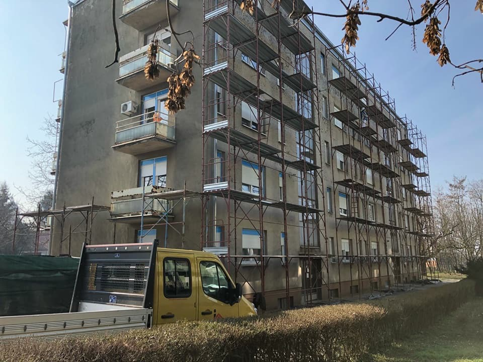

Rolete, komarnici i žaluzine.
Sjenila i zaštita od insekata izrađuju se po mjeri i u skladu s prozorima i vratima, a mogu se ugraditi i naknadno.
Pouzdana zaštita od insekata.
Mreža komarnika izrađena je od staklenoga vlakna i otporna je na sve vremenske prilike. Zbog potopnog profila komarnik se na prozoru gotovo i ne primjećuje.
Fiksni
Aluminijski okvir s napetom mrežom učvršćuje se kukicama na prozorski okvir, bez bušenja. Lako se skida za čišćenje ili kad vam nije potreban.
Rolo
Aluminijska kaseta s oprugom i vodilice s četkicama. Mreža se namata kao roleta, a komarnik ne treba održavati. Najčešći izbor za prozore, idealan i kad treba izaći van, npr. zaliti cvijeće.
Klizni
Segment s mrežicom klizi po aluminijskim vodilicama fiksiranim oko vrata. Idealan za klizna balkonska vrata i izlaze na terase.
Zaokretni
Krilo na malim pantima s oprugom stalno se drži zatvorenim, a magnetna traka dodatno ga zatvara.
Sjena, toplina i mir.
Rolete brzo i potpuno zatamne prostor, pridonose toplinskoj i zvučnoj izolaciji i štite prozore i vrata. Otvaraju se gurtnom, kurblom ili elektromotorom.

Nadgradne PVC kutije
- Visine
- 175, 205, 240 mm
- Ugradnja
- novi i stari objekti
- Revizija
- lako dostupna blenda
- Statika
- čelično ukrućenje, vanjska alu-blenda
Vanjske ALU rolete
- Visine
- 140, 165, 180 mm
- Prostor
- zauzimaju malo mjesta
- Revizija
- poklopac uvijek izvana
- Dodatak
- rolo komarnik u kutiji
- Očuvanje topline. Spuštena roleta zimi čuva toplinu – gubitak kroz staklene površine smanjuje se do 30 %, što znatno smanjuje troškove grijanja.
- Zaštita od nepogoda. Najbolja zaštita od vjetra, kiše, snijega, tuče i prejakog sunca.
- Sigurnost. Spuštena roleta produžuje vrijeme provale i povećava buku pri nasilnom otvaranju.
PVC lamele
- Visina letvice
- 37 ili 40 mm
- Preporučena širina
- do 140 cm
- Vijek trajanja
- 15 – 20 godina uz pravilnu ugradnju i uporabu
Naša preporuka: što svjetlija roleta, to bolje – tamnije lamele brže se uvijaju i ukrućuju.
ALU lamele
- Visina letvice
- 39 ili 43 mm
- Preporučena širina
- 180 i 220 cm
- Ispuna
- PUR pjena, perforacija
- Plastifikacija
- sjaj 15 – 30 godina
Velik izbor boja i znatno duži vijek trajanja od PVC rolete.
Svjetlo po vašoj mjeri.
Aluminijske žaluzine (venecijaneri) klasičan su i vrlo ekonomičan način zaštite od sunca i alternativa zavjesama. Proizvode se po mjeri kupca, u širokoj paleti boja.
Unutarnje
Dubine oko 25 mm. Špagicom se žaluzina diže i spušta, a ručicom se podešava kut lamela.
Vanjske
Dubine od 50 do 90 mm. Upravljaju se kurblom (monokomandom) ili elektromotorom, uz dizanje, spuštanje i zakretanje lamela.
- zaštita od sunčeve svjetlosti i pogleda izvana
- estetski efekt i ekonomičnost
- jednostavno upravljanje
- za sve vrste prozora, klizne stijene i fasade
Kvake, poluolive i rukohvati.
Uz stolariju nudimo velik izbor poluoliva, kvaka i rukohvata, u nekoliko materijala i boja.
- Poluolive – u PVC izvedbi kao standardna oprema prozora, a dostupne i u ALU i inox verziji.
- Kvake za ulazna vrata – standardno u bijeloj boji, s bazom od aluminija; dostupne i u inox varijanti.
- Rukohvati – P rukohvat, kvadratni, ravni i kosi, najčešće od aluminija i inoxa.